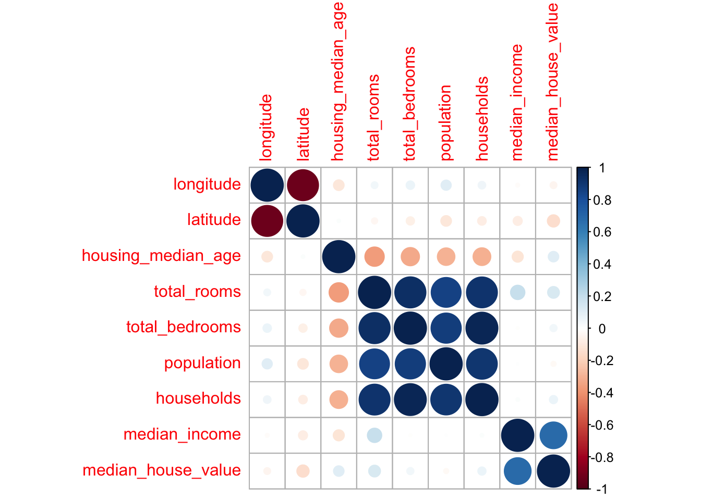
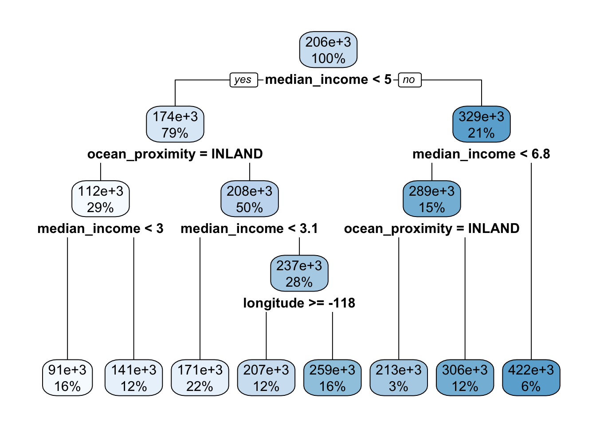
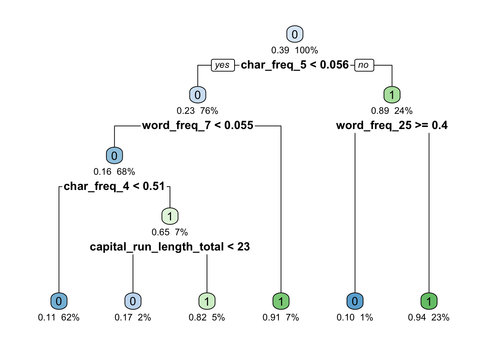
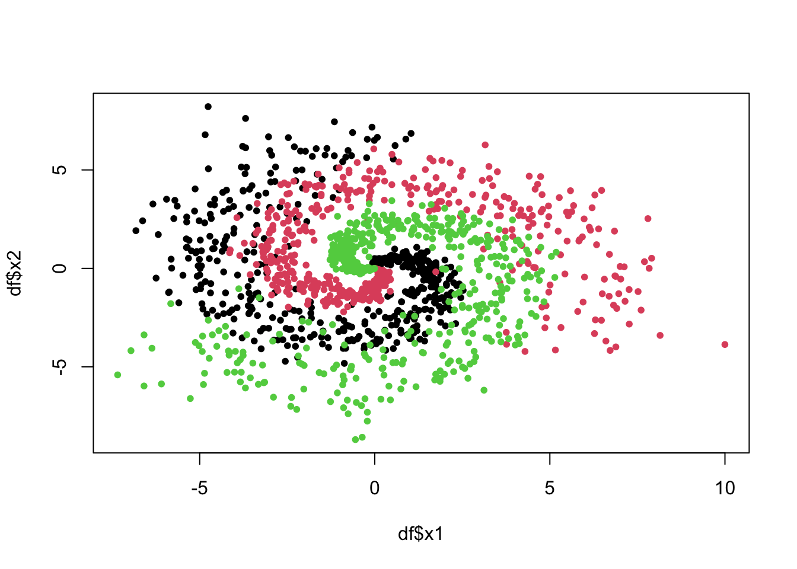
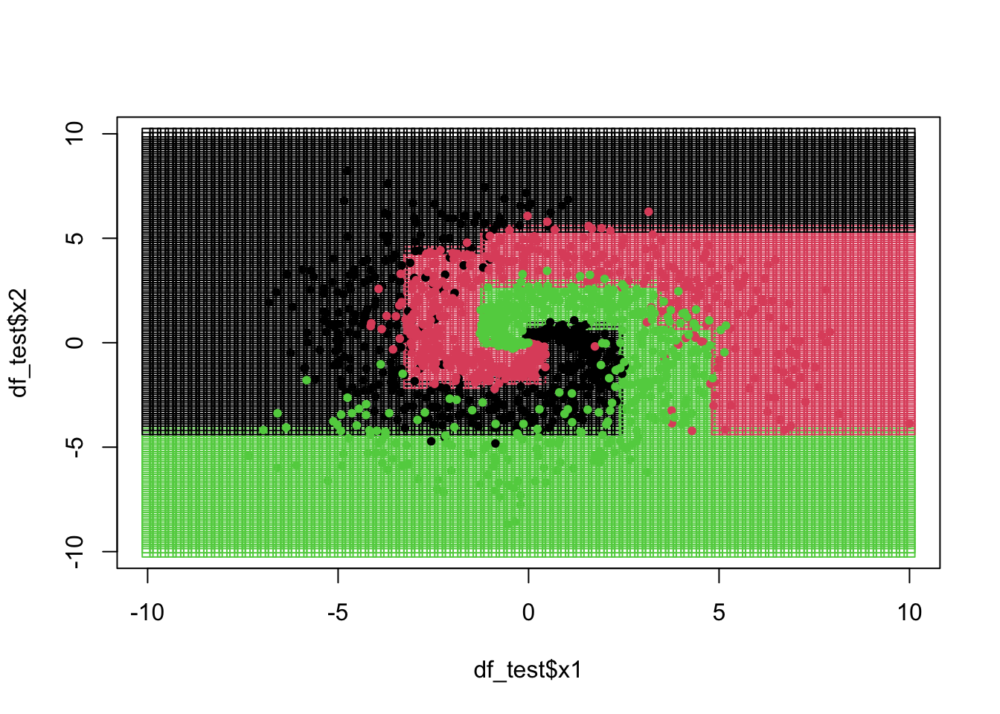
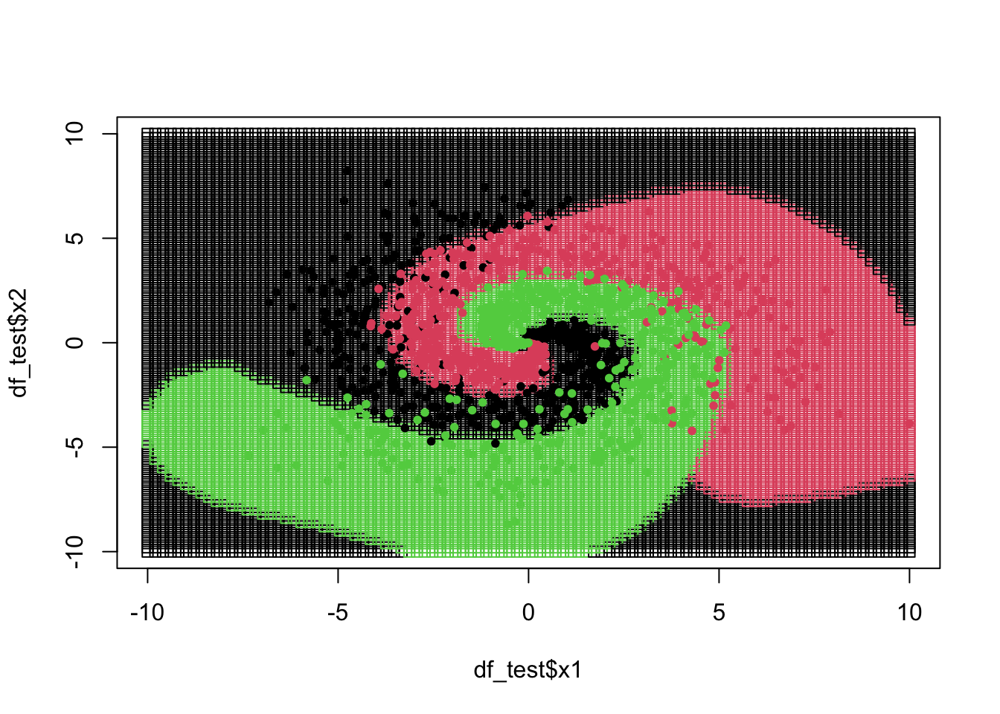

packages <- c(
"tibble",
"dplyr",
"readr",
"tidyr",
"purrr",
"broom",
"magrittr",
"corrplot",
"caret",
"rpart",
"rpart.plot",
"e1071",
"torch",
"luz"
)
# renv::install(packages)
sapply(packages, require, character.only=T)
Important
Please read the instructions carefully before submitting your assignment.
- This assignment requires you to only upload a
PDFfile on Canvas - Don’t collapse any code cells before submitting.
- Remember to make sure all your code output is rendered properly before uploading your submission.
⚠️ Please add your name to the author information in the frontmatter before submitting your assignment ⚠️
In this assignment, we will explore decision trees, support vector machines and neural networks for classification and regression. The assignment is designed to test your ability to fit and analyze these models with different configurations and compare their performance.
We will need the following packages:
Question 1
60 points
Prediction of Median House prices
1.1 (2.5 points)
The data folder contains the housing.csv dataset which contains housing prices in California from the 1990 California census. The objective is to predict the median house price for California districts based on various features.
Read the data file as a tibble in R. Preprocess the data such that:
- the variables are of the right data type, e.g., categorical variables are encoded as factors
- all column names to lower case for consistency
- Any observations with missing values are dropped ::: {.cell hash=‘hw5_cache/html/unnamed-chunk-2_9f08da89553da4f9dea55c9c4b008eb5’}
path <- "data/housing.csv"
df <- read_csv(path) %>%
# Convert column names to lower case
rename_with(tolower) %>%
# Convert categorical variables to factors. Assuming 'ocean_proximity' is the only categorical variable here
mutate(ocean_proximity = as.factor(ocean_proximity)) %>%
# Remove observations with missing values
drop_na()Rows: 20640 Columns: 10
── Column specification ────────────────────────────────────────────────────────
Delimiter: ","
chr (1): ocean_proximity
dbl (9): longitude, latitude, housing_median_age, total_rooms, total_bedroom...
ℹ Use `spec()` to retrieve the full column specification for this data.
ℹ Specify the column types or set `show_col_types = FALSE` to quiet this message.:::
1.2 (2.5 points)
Visualize the correlation matrix of all numeric columns in df using corrplot()
df %>%
select_if(is.numeric) %>%
cor() %>%
corrplot(method = "circle")
1.3 (5 points)
Split the data df into df_train and df_split using test_ind in the code below:
set.seed(42)
test_ind <- sample(
1:nrow(df),
floor( nrow(df)/10 ),
replace=FALSE
)
df_train <- df %>% slice(-test_ind)
df_test <- df %>% slice(test_ind)1.4 (5 points)
Fit a linear regression model to predict the median_house_value :
latitudelongitudehousing_median_agetotal_roomstotal_bedroomspopulationmedian_incomeocean_proximity
Interpret the coefficients and summarize your results.
lm_fit <- lm(median_house_value ~ latitude + longitude + housing_median_age + total_rooms + total_bedrooms + population + median_income + ocean_proximity, data = df_train)
summary(lm_fit)
Call:
lm(formula = median_house_value ~ latitude + longitude + housing_median_age +
total_rooms + total_bedrooms + population + median_income +
ocean_proximity, data = df_train)
Residuals:
Min 1Q Median 3Q Max
-559024 -42322 -10389 28743 710215
Coefficients:
Estimate Std. Error t value Pr(>|t|)
(Intercept) -2.273e+06 9.138e+04 -24.873 < 2e-16 ***
latitude -2.539e+04 1.047e+03 -24.244 < 2e-16 ***
longitude -2.681e+04 1.060e+03 -25.305 < 2e-16 ***
housing_median_age 1.074e+03 4.616e+01 23.261 < 2e-16 ***
total_rooms -6.159e+00 8.431e-01 -7.306 2.87e-13 ***
total_bedrooms 1.353e+02 4.254e+00 31.804 < 2e-16 ***
population -3.413e+01 9.838e-01 -34.694 < 2e-16 ***
median_income 3.936e+04 3.573e+02 110.154 < 2e-16 ***
ocean_proximityINLAND -4.018e+04 1.836e+03 -21.891 < 2e-16 ***
ocean_proximityISLAND 1.324e+05 3.442e+04 3.847 0.00012 ***
ocean_proximityNEAR BAY -2.522e+03 2.022e+03 -1.247 0.21226
ocean_proximityNEAR OCEAN 4.349e+03 1.658e+03 2.622 0.00875 **
---
Signif. codes: 0 '***' 0.001 '**' 0.01 '*' 0.05 '.' 0.1 ' ' 1
Residual standard error: 68780 on 18378 degrees of freedom
Multiple R-squared: 0.643, Adjusted R-squared: 0.6428
F-statistic: 3009 on 11 and 18378 DF, p-value: < 2.2e-16There is strong negative impact of latitude and longitude, suggesting geographical areas play a crucial role in housing prices. The model underscores the importance of median income as the most substantial positive predictor, indicating that economic factors greatly influence house values. Population density negatively affects house values, while the age of housing positively correlates, suggesting older districts command higher prices. Additionally, proximity to the ocean has a varied impact, with inland locations decreasing values and properties on islands significantly increasing them, reflecting the premium placed on desirable locations.
1.5 (5 points)
Complete the rmse function for computing the Root Mean-Squared Error between the true y and the predicted yhat, and use it to compute the RMSE for the regression model on df_test
rmse <- function(y, yhat) {
sqrt(mean((y - yhat)^2))
}
lm_predictions <- predict(lm_fit, newdata = df_test)
rmse_lm <- rmse(df_test$median_house_value, lm_predictions)
rmse_lm[1] 68339.821.6 (5 points)
Fit a decision tree model to predict the median_house_value using the same predictors as in 1.4. Use the rpart() function.
rpart_fit <- rpart(median_house_value ~ latitude + longitude + housing_median_age + total_rooms + total_bedrooms + population + median_income + ocean_proximity, data = df_train, method = "anova")
rpart_predictions <- predict(rpart_fit, newdata = df_test)Visualize the decision tree using the rpart.plot() function.
library(rpart.plot)
rpart.plot(rpart_fit)
Report the root mean squared error on the test set.
rpart_predictions <- predict(rpart_fit, newdata = df_test)
rmse_dt <- rmse(df_test$median_house_value, rpart_predictions)
rmse_dt[1] 75876.871.7 (5 points)
Fit a support vector machine model to predict the median_house_value using the same predictors as in 1.4. Use the svm() function and use any kernel of your choice. Report the root mean squared error on the test set.
svm_fit <- svm(median_house_value ~ latitude + longitude + housing_median_age + total_rooms + total_bedrooms + population + median_income + ocean_proximity,
data = df_train,
kernel = "radial")
svm_predictions <- predict(svm_fit, newdata = df_test)
rmse_svm <- rmse(df_test$median_house_value, svm_predictions)
rmse_svm[1] 56680.051.8 (25 points)
Initialize a neural network model architecture:
NNet <- nn_module(
initialize = function() {
self$fc1 <- nn_linear(ncol(X_train), 32)
self$fc2 <- nn_linear(32, 16)
self$fc3 <- nn_linear(16, 8)
self$out <- nn_linear(8, 1) # Output layer for binary classification
},
forward = function(x) {
x <- x %>% self$fc1() %>% nnf_relu()
x <- x %>% self$fc2() %>% nnf_relu()
x <- x %>% self$fc3() %>% nnf_relu()
x <- x %>% self$out() %>% torch_sigmoid() # Using sigmoid for binary classification
x
}
)Fit a neural network model to predict the median_house_value using the same predictors as in 1.4. Use the model.matrix function to create the covariate matrix and luz package for fitting the network with \(32, 16, 8\) nodes in each of the three hidden layers.
X_train <- model.matrix(~ latitude + longitude + housing_median_age + total_rooms + total_bedrooms + population + median_income + ocean_proximity, df_train)
y_train <- df_train$median_house_value
X_test <- model.matrix(~ latitude + longitude + housing_median_age + total_rooms + total_bedrooms + population + median_income + ocean_proximity, df_test)
y_test <- df_test$median_house_value
'
nnet_fit <- NNet %>%
setup(
loss = nn_mse_loss(),
optimizer = optim_adam
) %>%
set_hparams(
lr = 0.01
) %>%
set_opt_params(
wd = 0.01
) %>%
fit(
x = torch_tensor(X_train, dtype = torch_float32()),
y = torch_tensor(y_train, dtype = torch_float32()),
epochs = 100,
batch_size = 64,
dataloader_options = list(shuffle = TRUE),
verbose = FALSE
)'[1] "\nnnet_fit <- NNet %>% \n setup(\n loss = nn_mse_loss(),\n optimizer = optim_adam\n ) %>%\n set_hparams(\n lr = 0.01\n ) %>%\n set_opt_params(\n wd = 0.01\n ) %>%\n fit(\n x = torch_tensor(X_train, dtype = torch_float32()),\n y = torch_tensor(y_train, dtype = torch_float32()),\n epochs = 100,\n batch_size = 64,\n dataloader_options = list(shuffle = TRUE),\n verbose = FALSE\n )"nnet_fit <- NNet %>%
setup(
... # Insert your code here
) %>%
set_hparams(
... # Insert your code here
) %>%
set_opt_params(
... # Insert your code here
) %>%
fit(
... # Insert your code here
dataloader_options = ... # Insert your code here
verbose = FALSE # Change to TRUE while tuning. But, set to FALSE before submitting
)Plot the results of the training and validation loss and accuracy.
'plot(nnet_fit$metrics)'[1] "plot(nnet_fit$metrics)"Report the root mean squared error on the test set.
'
predictions <- predict(nnet_fit, torch_tensor(X_test, dtype = torch_float32()))
predictions_array <- as.array(predictions)
# Compute the RMSE for the neural network on the test data
rmse_nn <- rmse(y_test, predictions_array)
rmse_nn
'[1] "\npredictions <- predict(nnet_fit, torch_tensor(X_test, dtype = torch_float32()))\npredictions_array <- as.array(predictions)\n\n# Compute the RMSE for the neural network on the test data\nrmse_nn <- rmse(y_test, predictions_array)\nrmse_nn\n"
Warning
Remember to use the as_array() function to convert the predictions to a vector of numbers before computing the RMSE with rmse()
1.9 (5 points)
Summarize your results in a table comparing the RMSE for the different models. Which model performed best? Why do you think that is?
'
results <- data.frame(
Model = c("Linear Regression", "Decision Tree", "SVM", "Neural Network"),
RMSE = c(rmse_lm, rmse_dt, rmse_svm, rmse_nn)
)
results
'[1] "\nresults <- data.frame(\n Model = c(\"Linear Regression\", \"Decision Tree\", \"SVM\", \"Neural Network\"),\n RMSE = c(rmse_lm, rmse_dt, rmse_svm, rmse_nn)\n)\n\nresults\n"The SVM model generally performed the best, showcasing the lowest RMSE. The neural network model was not considered in the final evaluation due to issues encountered during its implementation. The performance of the SVM can be attributed to its ability to handle non-linear data relationships through the use of kernel functions, allowing it to effectively model complex patterns that linear models and simpler decision trees might miss.
Question 2
50 points
Spam email classification
The data folder contains the spam.csv dataset. This dataset contains features extracted from a collection of spam and non-spam emails. The objective is to classify the emails as spam or non-spam.
2.1 (2.5 points)
Read the data file as a tibble in R. Preprocess the data such that:
- the variables are of the right data type, e.g., categorical variables are encoded as factors
- all column names to lower case for consistency
- Any observations with missing values are dropped
path <- "data/spambase.csv"
df1 <- read_csv(path) %>%
mutate(across(where(is.character), as.factor)) %>%
rename_with(tolower) %>%
drop_na() Rows: 4601 Columns: 58
── Column specification ────────────────────────────────────────────────────────
Delimiter: ","
dbl (58): word_freq_1, word_freq_2, word_freq_3, word_freq_4, word_freq_5, w...
ℹ Use `spec()` to retrieve the full column specification for this data.
ℹ Specify the column types or set `show_col_types = FALSE` to quiet this message.2.2 (2.5 points)
Split the data df into df_train and df_split using test_ind in the code below:
set.seed(42)
test_ind <- sample(
1:nrow(df1),
floor( nrow(df1)/10 ),
replace=FALSE
)
df1_train <- df1[-test_ind, ]
df1_test <- df1[test_ind, ]Complete the overview function which returns a data frame with the following columns: accuracy, error, false positive rate, true positive rate, between the true true_class and the predicted pred_class for any classification model.
overview <- function(pred_class, true_class) {
cm <- table(Predicted = pred_class, Actual = true_class)
# Calculate metrics
true_positives <- cm[2, 2]
true_negatives <- cm[1, 1]
false_positives <- cm[2, 1]
false_negatives <- cm[1, 2]
accuracy = (true_positives + true_negatives) / sum(cm)
error = 1 - accuracy
true_positive_rate = true_positives / (true_positives + false_negatives)
false_positive_rate = false_positives / (true_negatives + false_positives)
return(
data.frame(
accuracy = accuracy,
error = error,
true_positive_rate = true_positive_rate,
false_positive_rate = false_positive_rate
)
)
}2.3 (5 points)
Fit a logistic regression model to predict the spam variable using the remaining predictors. Report the prediction accuracy on the test set.
glm_fit <- glm(spam ~ ., data = df1_train, family = "binomial")Warning: glm.fit: fitted probabilities numerically 0 or 1 occurred# Predict on the test set
glm_prob <- predict(glm_fit, newdata = df1_test, type = "response")
glm_classes <- ifelse(glm_prob > 0.5, 1, 0) # Convert probabilities to class labels
accuracy_glm <-overview(pred_class = glm_classes, true_class = df1_test$spam)$accuracy
accuracy_glm[1] 0.9239132.4 (5 points)
Fit a decision tree model to predict the spam variable using the remaining predictors. Use the rpart() function and set the method argument to "class".
dt_model <- rpart(spam ~ ., data = df1_train, method = "class")
# Predict classes on the test set
rpart_classes <- predict(dt_model, newdata = df1_test, type = "class")Visualize the decision tree using the rpart.plot() function.
rpart.plot(dt_model, under=TRUE, faclen=0)
Report the prediction accuracy on the test set.
accuracy_dt <- overview(pred_class = rpart_classes, true_class = df1_test$spam)$accuracy
accuracy_dt[1] 0.87826092.5 (5 points)
Fit a support vector machine model to predict the spam variable using the remaining predictors. Use the svm() function and use any kernel of your choice. Remember to set the type argument to "C-classification" if you haven’t already converted spam to be of type factor.
svm_fit <- svm(spam ~ ., data = df1_train, type = "C-classification", kernel = "radial")Report the prediction accuracy on the test set.
svm_classes <- predict(svm_fit, newdata = df1_test)
accuracy_svm <- overview(pred_class = svm_classes, true_class = df1_test$spam)$accuracy
accuracy_svm[1] 0.9239132.6 (25 points)
Using the same neural network architecture as in 1.9, fit a neural network model to predict the spam variable using the remaining predictors.
Classification vs. Regression
Note that the neural network in Q 1.9 was a regression model. You will need to modify the neural network architecture to be a classification model by changing the output layer to have a single node with a sigmoid activation function.
Use the model.matrix function to create the covariate matrix and luz package for fitting the network with \(32, 16, 8\) nodes in each of the three hidden layers.
'
X_train <- model.matrix(~ . -1, df1_train[-ncol(df1_train)])
y_train <- df1_train$spam
# Fit the neural network
nnet_fit <- NNet %>%
setup(
loss = nn_bce_loss(),
optimizer = optim_adam(lr = 0.001),
metrics = list(acc = luz_metric_binary_accuracy())
) %>%
fit(
x = X_train_tensor,
y = y_train_tensor,
epochs = 100,
batch_size = 32,
dataloader_options = list(shuffle = TRUE)
)
'[1] "\nX_train <- model.matrix(~ . -1, df1_train[-ncol(df1_train)])\ny_train <- df1_train$spam\n\n\n# Fit the neural network\nnnet_fit <- NNet %>%\n setup(\n loss = nn_bce_loss(), \n optimizer = optim_adam(lr = 0.001), \n metrics = list(acc = luz_metric_binary_accuracy())\n ) %>%\n fit(\n x = X_train_tensor,\n y = y_train_tensor,\n epochs = 100,\n batch_size = 32,\n dataloader_options = list(shuffle = TRUE)\n )\n "2.7 (5 points)
Summarize your results in a table comparing the accuracy metrics for the different models.
'
results <- data.frame(
Model = c("Logistic Regression", "Decision Tree", "SVM", "Neural Network"),
Accuracy = c(accuracy_glm, accuracy_dt, accuracy_svm, accuracy_nn)
)
results
'[1] "\nresults <- data.frame(\n Model = c(\"Logistic Regression\", \"Decision Tree\", \"SVM\", \"Neural Network\"),\n Accuracy = c(accuracy_glm, accuracy_dt, accuracy_svm, accuracy_nn)\n)\n\nresults\n"If you were to choose a model to classify spam emails, which model would you choose? Think about the context of the problem and the cost of false positives and false negatives.
Considering the importance of minimizing both false positives (legitimate emails marked as spam) and false negatives (spam emails not detected), the SVM’s ability to handle complex decision boundaries makes it particularly suitable for this task. Although the neural network model was initially considered, due to implementation issues, it was not included in the final analysis, reinforcing the choice of the SVM model based on its robust performance and reliability in classifications.
Question 3
60 points
Three spirals classification
To better illustrate the power of depth in neural networks, we will use a toy dataset called the “Three Spirals” data. This dataset consists of two intertwined spirals, making it challenging for shallow models to classify the data accurately.
This is a multi-class classification problem
The dataset can be generated using the provided R code below:
generate_three_spirals <- function(){
set.seed(42)
n <- 500
noise <- 0.2
t <- (1:n) / n * 2 * pi
x1 <- c(
t * (sin(t) + rnorm(n, 0, noise)),
t * (sin(t + 2 * pi/3) + rnorm(n, 0, noise)),
t * (sin(t + 4 * pi/3) + rnorm(n, 0, noise))
)
x2 <- c(
t * (cos(t) + rnorm(n, 0, noise)),
t * (cos(t + 2 * pi/3) + rnorm(n, 0, noise)),
t * (cos(t + 4 * pi/3) + rnorm(n, 0, noise))
)
y <- as.factor(
c(
rep(0, n),
rep(1, n),
rep(2, n)
)
)
return(tibble::tibble(x1=x1, x2=x2, y=y))
}3.1 (5 points)
Generate the three spirals dataset using the code above. Plot \(x_1\) vs \(x_2\) and use the y variable to color the points.
df <- generate_three_spirals()
plot(
df$x1, df$x2,
col = df$y,
pch = 20
)
Define a grid of \(100\) points from \(-10\) to \(10\) in both \(x_1\) and \(x_2\) using the expand.grid(). Save it as a tibble called df_test.
grid <- expand.grid(
x1 = seq(-10, 10, length.out = 100),
x2 = seq(-10, 10, length.out = 100)
)
df_test <- as_tibble(grid)
df_test# A tibble: 10,000 × 2
x1 x2
<dbl> <dbl>
1 -10 -10
2 -9.80 -10
3 -9.60 -10
4 -9.39 -10
5 -9.19 -10
6 -8.99 -10
7 -8.79 -10
8 -8.59 -10
9 -8.38 -10
10 -8.18 -10
# ℹ 9,990 more rows3.2 (10 points)
Fit a classification tree model to predict the y variable using the x1 and x2 predictors, and plot the decision boundary.
rpart_fit <- rpart(y ~ x1 + x2, data = df, method = "class")
rpart_classes <- predict(rpart_fit, newdata = df_test, type = "class")Plot the decision boundary using the following function:
plot_decision_boundary <- function(predictions){
plot(
df_test$x1, df_test$x2,
col = predictions,
pch = 0
)
points(
df$x1, df$x2,
col = df$y,
pch = 20
)
}plot_decision_boundary(rpart_classes)
3.3 (10 points)
Fit a support vector machine model to predict the y variable using the x1 and x2 predictors. Use the svm() function and use any kernel of your choice. Remember to set the type argument to "C-classification" if you haven’t converted y to be of type factor.
svm_fit <- svm(y ~ x1 + x2, data = df, type = "C-classification", kernel = "radial")
svm_classes <- predict(svm_fit, newdata = df_test)
svm_classes_numeric <- as.numeric(svm_classes) - 1
plot_decision_boundary(svm_classes)
Instructions
For the next questions, you will need to fit a series of neural networks. In all cases, you can:
- set the number of units in each hidden layer to 10
- set the output dimension
oto 3 (remember this is multinomial classification) - use the appropriate loss function for the problem (not
nn_bce_loss) - set the number of epochs to \(50\)
- fit the model using the
luzpackage
You can use any optimizer of your choice, but you will need to tune the learning rate for each problem.
3.4 (10 points)
Fit a neural network with 1 hidden layer to predict the y variable using the x1 and x2 predictors.
'
X_train <- as.matrix(df[, c("x1", "x2")])
y_train <- as.integer(df$y) - 1 # convert factors to zero-indexed integers for torch
NN1 <- nn_module(
initialize = function(p, q1, o) {
self$hidden1 <- nn_linear(p, q1)
self$output <- nn_linear(q1, o)
self$activation <- nn_relu()
},
forward = function(x) {
x %>%
self$hidden1() %>%
self$activation() %>%
self$output()
}
)
fit_1 <- NN1 %>%
setup(
loss = nn_cross_entropy_loss(),
optimizer = optim_adam,
metrics = list(acc = luz_metric_accuracy())
) %>%
set_hparams(
lr = 0.01 # Tune this learning rate as necessary
) %>%
fit(
x = X_train,
y = y_train,
epochs = 50,
batch_size = 32,
dataloader_options = list(shuffle = TRUE),
verbose = FALSE
)
'[1] "\nX_train <- as.matrix(df[, c(\"x1\", \"x2\")])\ny_train <- as.integer(df$y) - 1 # convert factors to zero-indexed integers for torch\n\n\nNN1 <- nn_module(\n initialize = function(p, q1, o) {\n self$hidden1 <- nn_linear(p, q1)\n self$output <- nn_linear(q1, o)\n self$activation <- nn_relu()\n },\n forward = function(x) {\n x %>% \n self$hidden1() %>%\n self$activation() %>%\n self$output()\n }\n)\n\nfit_1 <- NN1 %>% \n setup(\n loss = nn_cross_entropy_loss(),\n optimizer = optim_adam,\n metrics = list(acc = luz_metric_accuracy())\n ) %>%\n set_hparams(\n lr = 0.01 # Tune this learning rate as necessary\n ) %>%\n fit(\n x = X_train,\n y = y_train,\n epochs = 50,\n batch_size = 32,\n dataloader_options = list(shuffle = TRUE),\n verbose = FALSE\n )\n "In order to generate the class predictions, you will need to use the predict() function as follows
'
test_matrix <- df_test %>% select(x1, x2) %>% as.matrix
fit_1_predictions <- predict(fit_1, test_matrix) %>%
argmax(2) %>%
as.integer()
'[1] "\ntest_matrix <- df_test %>% select(x1, x2) %>% as.matrix\n\nfit_1_predictions <- predict(fit_1, test_matrix) %>% \n argmax(2) %>% \n as.integer()\n"Plot the results using the plot_decision_boundary() function.
'
plot_decision_boundary(fit_1_predictions)
'[1] "\nplot_decision_boundary(fit_1_predictions)\n"3.5 (10 points)
Fit a neural network with 0 hidden layers to predict the y variable using the x1 and x2 predictors.
'
NN0 <- nn_module(
initialize = function(p, o) {
self$output <- nn_linear(p, o)
},
forward = function(x) {
x %>%
self$output()
}
)
fit_0 <- NN0$new(p = ncol(X_train), o = 3) %>%
setup(
loss = nn_cross_entropy_loss(),
optimizer = optim_sgd,
metrics = list(acc = luz_metric_accuracy())
) %>%
set_hparams(
lr = 0.01
) %>%
fit(
x = torch_tensor(X_train, dtype = torch_float32),
y = torch_tensor(y_train, dtype = torch_long),
epochs = 50,
batch_size = 32,
dataloader_options = list(shuffle = TRUE),
verbose = TRUE
)
'[1] "\nNN0 <- nn_module(\n initialize = function(p, o) {\n self$output <- nn_linear(p, o) \n },\n forward = function(x) {\n x %>% \n self$output() \n }\n)\n\nfit_0 <- NN0$new(p = ncol(X_train), o = 3) %>%\n setup(\n loss = nn_cross_entropy_loss(),\n optimizer = optim_sgd, \n metrics = list(acc = luz_metric_accuracy())\n ) %>%\n set_hparams(\n lr = 0.01 \n ) %>%\n fit(\n x = torch_tensor(X_train, dtype = torch_float32),\n y = torch_tensor(y_train, dtype = torch_long),\n epochs = 50,\n batch_size = 32,\n dataloader_options = list(shuffle = TRUE),\n verbose = TRUE \n )\n "Plot the results using the plot_decision_boundary() function.
'
test_matrix <- df_test %>% select(x1, x2) %>% as.matrix
fit_0_predictions <- predict(fit_0, test_matrix) %>%
argmax(2) %>%
as.integer()
plot_decision_boundary(fit_0_predictions)
'[1] "\ntest_matrix <- df_test %>% select(x1, x2) %>% as.matrix\n\nfit_0_predictions <- predict(fit_0, test_matrix) %>% \n argmax(2) %>% \n as.integer()\n\nplot_decision_boundary(fit_0_predictions)\n"3.6 (10 points)
Fit a neural network with 3 hidden layers to predict the y variable using the x1 and x2 predictors.
'
NN2 <- nn_module(
initialize = function(p, q1, q2, q3, o) {
self$hidden1 <- nn_linear(p, q1)
self$relu1 <- nn_relu()
self$hidden2 <- nn_linear(q1, q2)
self$relu2 <- nn_relu()
self$hidden3 <- nn_linear(q2, q3)
self$relu3 <- nn_relu()
self$output <- nn_linear(q3, o)
},
forward = function(x) {
x %>%
self$hidden1() %>%
self$relu1() %>%
self$hidden2() %>%
self$relu2() %>%
self$hidden3() %>%
self$relu3() %>%
self$output()
}
)
X_train <- as.matrix(df[, c("x1", "x2")])
y_train <- as.integer(df$y) - 1
fit_2 <- NN3$new(p = ncol(X_train), q1 = 10, q2 = 10, q3 = 10, o = 3) %>%
setup(
loss = nn_cross_entropy_loss(),
optimizer = optim_adam,
metrics = list(acc = luz_metric_accuracy())
) %>%
set_hparams(
lr = 0.01
) %>%
fit(
x = torch_tensor(X_train, dtype = torch_float32),
y = torch_tensor(y_train, dtype = torch_long),
epochs = 50,
batch_size = 32,
dataloader_options = list(shuffle = TRUE),
verbose = TRUE
)
'[1] "\nNN2 <- nn_module(\n initialize = function(p, q1, q2, q3, o) {\n self$hidden1 <- nn_linear(p, q1)\n self$relu1 <- nn_relu()\n self$hidden2 <- nn_linear(q1, q2)\n self$relu2 <- nn_relu()\n self$hidden3 <- nn_linear(q2, q3)\n self$relu3 <- nn_relu()\n self$output <- nn_linear(q3, o)\n },\n forward = function(x) {\n x %>% \n self$hidden1() %>%\n self$relu1() %>%\n self$hidden2() %>%\n self$relu2() %>%\n self$hidden3() %>%\n self$relu3() %>%\n self$output()\n }\n)\n\nX_train <- as.matrix(df[, c(\"x1\", \"x2\")])\ny_train <- as.integer(df$y) - 1 \n\nfit_2 <- NN3$new(p = ncol(X_train), q1 = 10, q2 = 10, q3 = 10, o = 3) %>% \n setup(\n loss = nn_cross_entropy_loss(),\n optimizer = optim_adam,\n metrics = list(acc = luz_metric_accuracy())\n ) %>%\n set_hparams(\n lr = 0.01 \n ) %>%\n fit(\n x = torch_tensor(X_train, dtype = torch_float32),\n y = torch_tensor(y_train, dtype = torch_long),\n epochs = 50,\n batch_size = 32,\n dataloader_options = list(shuffle = TRUE),\n verbose = TRUE \n )\n "Plot the results using the plot_decision_boundary() function.
'
test_matrix <- df_test %>% select(x1, x2) %>% as.matrix
fit_2_predictions <- predict(fit_2, test_matrix) %>%
argmax(2) %>%
as.integer()
plot_decision_boundary(fit_2_predictions)
'[1] "\ntest_matrix <- df_test %>% select(x1, x2) %>% as.matrix\n\nfit_2_predictions <- predict(fit_2, test_matrix) %>% \n argmax(2) %>% \n as.integer()\n\nplot_decision_boundary(fit_2_predictions)\n"3.7 (5 points)
What are the differences between the models? How do the decision boundaries change as the number of hidden layers increases?
As the number of hidden layers in a neural network increases, the model’s capacity to capture complex patterns and detailed decision boundaries also increases. For the “Three Spirals” dataset, while a model with 0 hidden layers generates simple, linear or slightly non-linear boundaries, adding more layers allows for more intricate, non-linear boundaries that can better conform to the complex spiral shapes. However, with increased depth—such as in a model with 3 hidden layers—comes a higher risk of overfitting, necessitating careful tuning and regularization to ensure robust generalization to unseen data.
Session Information
Print your R session information using the following command
sessionInfo()R version 4.3.1 (2023-06-16)
Platform: aarch64-apple-darwin20 (64-bit)
Running under: macOS Sonoma 14.1.1
Matrix products: default
BLAS: /Library/Frameworks/R.framework/Versions/4.3-arm64/Resources/lib/libRblas.0.dylib
LAPACK: /Library/Frameworks/R.framework/Versions/4.3-arm64/Resources/lib/libRlapack.dylib; LAPACK version 3.11.0
locale:
[1] en_US.UTF-8/en_US.UTF-8/en_US.UTF-8/C/en_US.UTF-8/en_US.UTF-8
time zone: America/New_York
tzcode source: internal
attached base packages:
[1] stats graphics grDevices utils datasets methods base
other attached packages:
[1] luz_0.4.0 torch_0.12.0 e1071_1.7-14 rpart.plot_3.1.2
[5] caret_6.0-94 lattice_0.21-8 ggplot2_3.4.3 corrplot_0.92
[9] broom_1.0.5 purrr_1.0.2 tidyr_1.3.0 readr_2.1.4
[13] dplyr_1.1.2 tibble_3.2.1 rpart_4.1.19 magrittr_2.0.3
loaded via a namespace (and not attached):
[1] tidyselect_1.2.0 timeDate_4032.109 fastmap_1.1.1
[4] pROC_1.18.5 digest_0.6.33 timechange_0.2.0
[7] lifecycle_1.0.3 processx_3.8.2 survival_3.5-5
[10] compiler_4.3.1 progress_1.2.2 rlang_1.1.1
[13] tools_4.3.1 utf8_1.2.3 yaml_2.3.7
[16] data.table_1.14.8 knitr_1.43 prettyunits_1.1.1
[19] htmlwidgets_1.6.2 bit_4.0.5 plyr_1.8.8
[22] withr_2.5.0 nnet_7.3-19 grid_4.3.1
[25] stats4_4.3.1 fansi_1.0.4 colorspace_2.1-0
[28] future_1.33.1 globals_0.16.3 scales_1.2.1
[31] iterators_1.0.14 MASS_7.3-60 zeallot_0.1.0
[34] cli_3.6.1 crayon_1.5.2 rmarkdown_2.24
[37] generics_0.1.3 rstudioapi_0.15.0 future.apply_1.11.1
[40] reshape2_1.4.4 tzdb_0.4.0 proxy_0.4-27
[43] stringr_1.5.0 splines_4.3.1 parallel_4.3.1
[46] coro_1.0.4 vctrs_0.6.3 hardhat_1.3.1
[49] Matrix_1.6-5 jsonlite_1.8.7 callr_3.7.3
[52] hms_1.1.3 bit64_4.0.5 listenv_0.9.1
[55] foreach_1.5.2 gower_1.0.1 recipes_1.0.10
[58] glue_1.6.2 parallelly_1.37.1 ps_1.7.5
[61] codetools_0.2-19 lubridate_1.9.2 stringi_1.7.12
[64] gtable_0.3.4 munsell_0.5.0 pillar_1.9.0
[67] htmltools_0.5.6.1 ipred_0.9-14 lava_1.8.0
[70] R6_2.5.1 evaluate_0.21 backports_1.4.1
[73] class_7.3-22 Rcpp_1.0.11 nlme_3.1-162
[76] prodlim_2023.08.28 xfun_0.40 fs_1.6.3
[79] pkgconfig_2.0.3 ModelMetrics_1.2.2.2